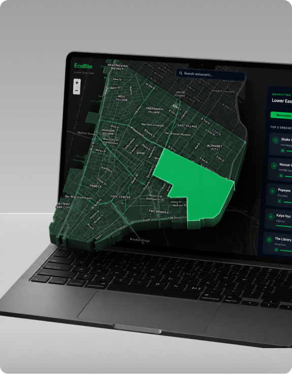
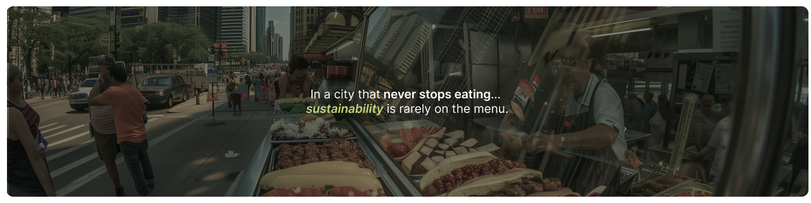
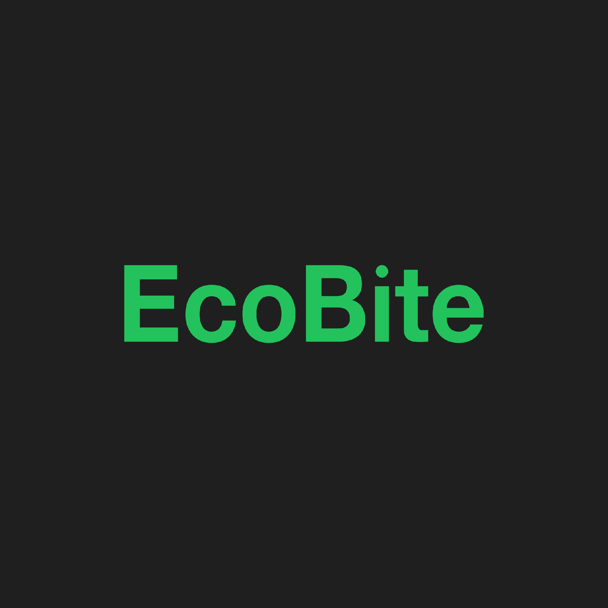
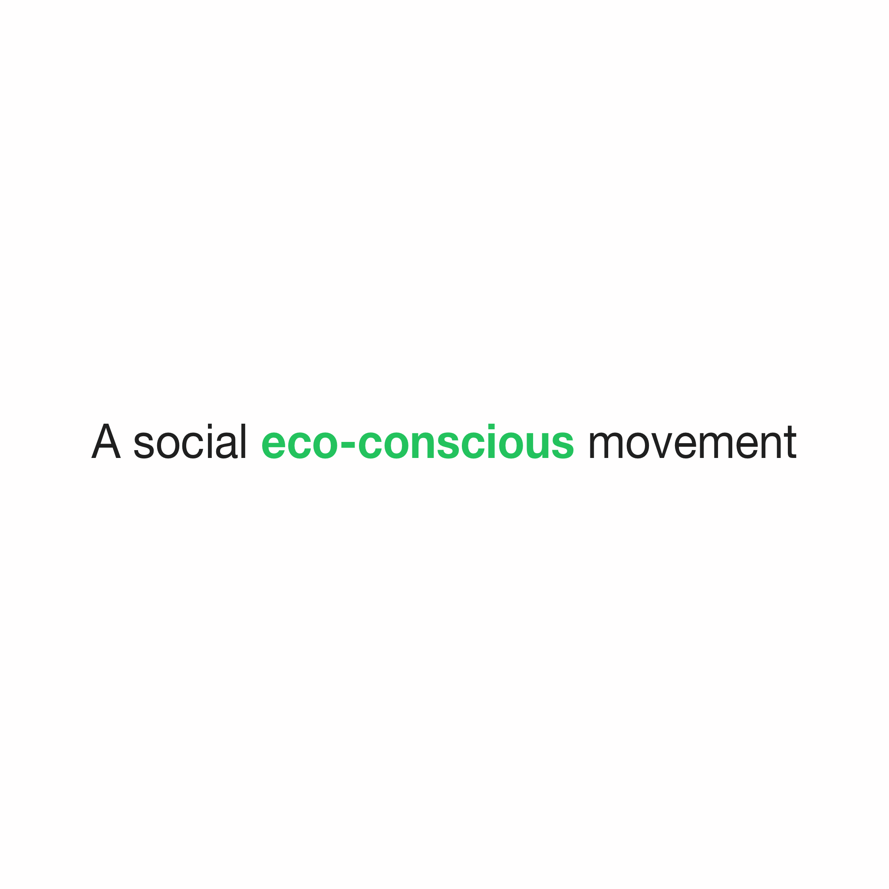

The Problem & Research:
What makes a restaurant “sustainable”?
Instead of treating sustainability as one number, I combined three public NYC datasets, building energy and water use (LL84) and health inspections (DOHMH), into one Green Score per restaurant.
What I found
Energy and water numbers mean little to someone deciding where to grab dinner.
Location, neighborhood, and nearby alternatives all shape an everyday food decision.
Even at a greener restaurant, different dishes can have very different impacts.
The Solution:
Browse NYC neighborhoods on a map and see the greenest restaurants in each.
Compare restaurants with one Green Score instead of reading raw datasets.
Scan a menu to estimate the carbon footprint of individual dishes.
How it works, step by step
Tech behind it
A single 0–100 score lets people compare at a glance. The energy, water, and health split lives one tap deeper in the detail view, for anyone who wants to check the math.
Restaurants without EnergyStar data get a neutral 25 of 50 instead of being dropped. Small spots stay on the map, at the cost of a less precise score.
The sidebar shows only the top 5 greenest places per neighborhood. Search still covers thousands of restaurants, but browsing stays decision-ready.
Launched with 10 neighborhoods across Manhattan and Brooklyn, where NYU’s campuses are, instead of all of NYC. Goal was to validate the core value: people will pick a greener option when the impact is visible.
User Testing:
NYU students tested it while picking a place to eat nearby
understood the Green Score without any explanation
said they’d pick the higher-scoring place when price and distance were similar
“I had no idea this data existed. The colors made it easy to compare places.”Tester, NYU junior living near Washington Square
What I changed: Testers didn’t fully trust the score until they saw where it came from, so I added the energy, water, and health breakdown to the detail view.
Reflection:
The data was never the product. City energy and water records only became useful once they turned into one score people could read in a second.
Share of logged orders from green-tier restaurants over time. If it doesn’t rise, the score informs people without changing what they do.
More neighborhoods beyond the launch 10, and showing that menu carbon numbers are AI estimates so users know how much to trust them.

